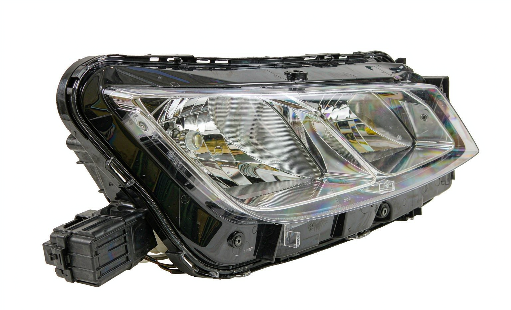

We quote 98690-2P500 weekly. The headlamp washer cap sits in the body & interior range most distributors reorder every quarter, so packaging and stock positions are updated on a rolling basis rather than per shipment.
OE 98690-2P500 is a HEADLAMP WASHER CAP for Hyundai / Kia vehicles, stocked and exported wholesale by KingMay Auto Parts (Guangzhou, China). MOQ from 10 pieces, mixed orders welcome, quotations within one business day.
How 98690-2P500 decodes in the Hyundai-Kia catalog system. The prefix identifies the component family; the suffix carries model and variant information.
| Field | Value |
|---|---|
| Full reference | 98690-2P500 |
| Normalized (no hyphen) | 986902P500 |
| Prefix (family code) | 98690 |
| Prefix maps to | HEADLAMP WASHER CAP (this reference) |
| References sharing prefix 98690 | 1 in KingMay catalog |
| Numbering family | Hyundai-Kia 5+5 format |

Other part numbers frequently ordered together with 98690-2P500 by wholesale clients.
| OE Number | Component |
|---|---|
| 98680-2B500 | HEADLAMP WASHER CAP |
| 98680-3J000 | HEADLAMP WASHER CAP |
| 98680-3L100 | HEADLAMP WASHER CAP |
| 98680-3L500 | HEADLAMP WASHER CAP |
| 98680-3M000 | HEADLAMP WASHER CAP |
| 98680-3M500 | HEADLAMP WASHER CAP |
| 98680-3S000 | HEADLAMP WASHER CAP |
| 98680-3V000 | HEADLAMP WASHER CAP |
Other part numbers in the body & interior group that wholesale clients order alongside OE 98690-2P500. Grouping mixed references into one shipment is how most importers reach full-container freight thresholds.
Browse all 337 Body & Interior OE references → · ← Previous in Body & Interior
| Item | Detail |
|---|---|
| Export packing | Neutral carton, inner foam protection; custom labels on request |
| Lead time | 7 working days (stock) · 25-35 days (production run) |
| Shipping terms | FOB Guangzhou / Shenzhen; CIF & DDP negotiable |
| Payment | T/T, LC at sight for contracts; sample orders by T/T |
| QC documentation | Packing list + photo report + dimension check per shipment |
The questions below are the ones buyers raise most often about OE 98690-2P500 — fitment, fault symptoms, cross-references, pricing and export terms. Each answer is written to be quotable on its own.
Noise normally traces to worn internal surfaces, a loose mount, a dry bearing or contact with a neighbouring part. Isolate it by reproducing the sound at a fixed speed, then compare against the reference photo for 98690-2P500 to confirm the right replacement.
Stock references leave Guangzhou within 7 working days. If 98690-2P500 needs a production run, allow 25-35 days depending on quantity and surface treatment. The schedule is confirmed in writing when the order is placed.
OE 98690-2P500 is the factory reference for this headlamp washer cap on selected Hyundai / Kia models. The Applications table on this page lists the confirmed rows — check trim level and build year against your own fleet before ordering, because one reference can cover several body variants.
Every shipment of 98690-2P500 leaves with a packing list, photo documentation and a QC report. Warranty terms are agreed per contract and reference that inspection record; claims are settled in writing against the documentation.
KingMay Auto Parts ships 98690-2P500 wholesale from Guangzhou to importers, distributors and workshops. Order directly from this page, or send the reference to our export desk for pricing, samples and documentation.
The Related OE References table above lists the alternates we see most often in trade inquiries. Cross-references work because the engineering envelope is shared across the body & interior family — always confirm dimensions and connector layout before you swap.
Buyers searching for OE 98690-2P500 most often land on these pages next.
Ask for the 98690-2P500 sample kit: photo confirmation, dimension report and material grade documentation included. All 98690-2P500 shipments leave with a packing list, photo documentation and QC report. Combined orders with other Hyundai-Kia references can share one container to cut landed cost. Payment terms are negotiable for established distributors; first-time buyers are welcome to start with a sample lot.
Send quantity + destination port. Quotations typically return within one business day.